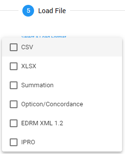

In the Document List, select the settings icon  .
.
Then, select Productions > Create for Selection/Documents. For more information on starting a production, see Productions.
Step five of the production wizard. This is where you define one or more load file formats.
In the Document List, select the settings icon .
Then, select Productions > Create for Selection/Documents. For more information on starting a production, see Productions.
A load file organizes and allows access to the data that has been produced. It is used by the receiving party to import the produced data into their own database. A load file contains information that allows the software to carry out certain functions with the data found in the load file.
Electronic data files contain what is commonly referred to as fielded data or metadata. Fielded data is additional, and often valuable, information about the electronic data. It is found in email messages, word processing documents, spreadsheets, and other computer files. In word processing documents, metadata may include prior revisions, revision dates, authors, and other information. Email metadata may identify who was sent a blind copy of a message, which computer created or generated a message, and who opened and viewed a message.
The (potential) production of fielded data, must be discussed before production starts. It is important that the attorneys agree to a list of fields that will (not) be produced. Use this list to map the fields.

It is not possible to redact fielded data. Fields that should have been redacted should be withheld from production.
Select one or more load formats. There are various load file formats depending on the software application. Some of the common load files include .DII (Summation) and .OPT/.DAT (Opticon/Concordance).

Link the source field names to the fields used in the load file. Prior to production agree to a list of fields that will (not) be produced. Use this list to map the fields. It is not possible to produce redacted fielded data. Fields that have been redacted should be withheld from production.
CSV
A CSV (comma-separated values) file that stores tabular data (numbers and text) in plain-text form. This file format is often used to exchange data between disparate applications.
XLSX
An Excel spreadsheet is a file that exists of cells in rows and columns and can help arrange, calculate and sort data. Data in a spreadsheet can be numeric values, as well as text, formulas, references and functions.
Summation
To load images and data into a Summation database, a .DII (Document Image Information) file is used.
Opticon/Concordance
The load file for a Concordance database with an Opticon (or, more recently called, a Concordance Image) image viewer an .OPT file is used. The Opticon load file is a page level load file, with each line representing one image. For the searchable text that gets loaded in the Concordance database, a separate .DAT file is produced.
EDRM XML 1.2
The EDRM XML interchange format provides an XML schema to facilitate the movement of electronically stored information (ESI) from one step of the electronic discovery process to the next, from one software program to the next, and from one organization to the next.
IPRO
An IPRO load file (LFP) instructs IPRO View how to display a project's image.